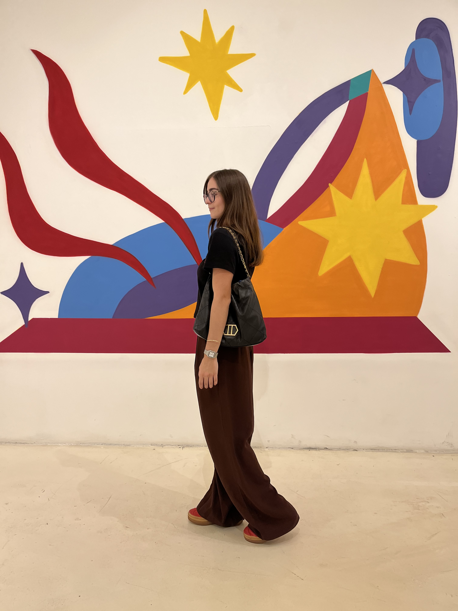

Tendências, achados, coleções que chegaram e ideias de look para o seu dia a dia. Um caderno de moda aberto, atualizado toda semana — para você ler, salvar e se inspirar.

Leitura livre para todo mundo. Para comentar e salvar, é só criar sua conta.
Ainda não tem post nessa categoria — em breve!